Ovládací prvky na mapě
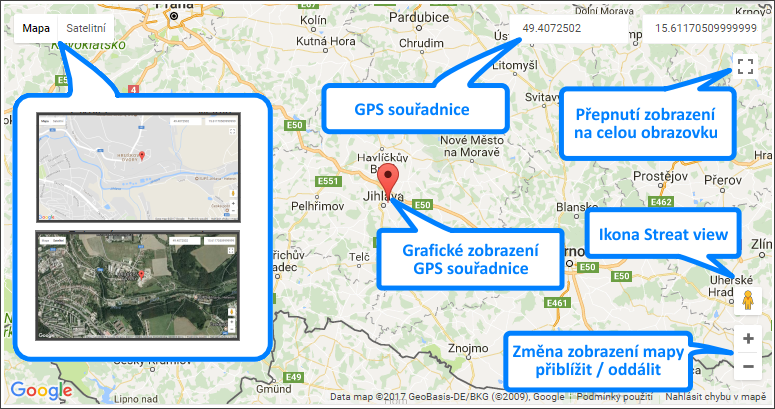
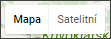
Tato tlačítka umožňují přepínání mezi dvěma druhy map MAPA / SATELIT. V MAPĚ lze na víc zapnout/vypnout terén, v SATELITU lze zapnout/vypnout značky (tedy všechny zakreslené objekty - města, silnice, řeky ...)
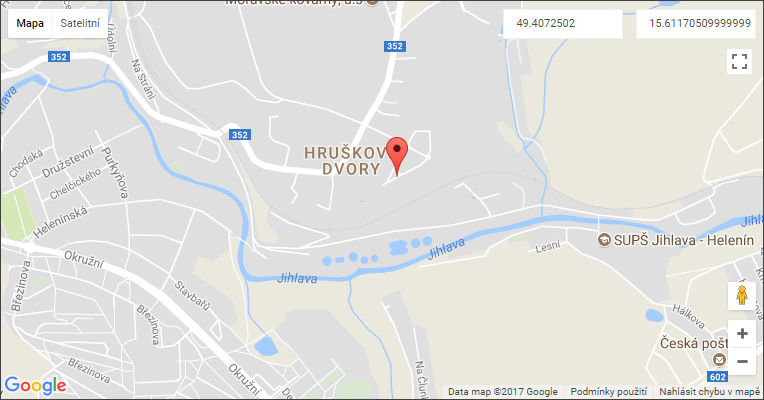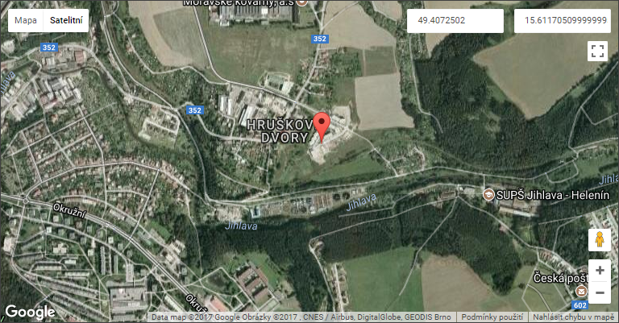
GPS souřadnice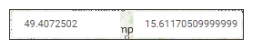, které je možné poklikem či tažením myši označit a zkopírovat např. do aplikace pro navigaci.
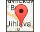Značka pro grafické zobrazení GPS souřadnic adresy. Tato značka ukazuje přesné místo adresy.
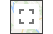Roztažení mapy na celou obrazovku. Do původního zobrazení se uživatel vrátí tlačítkem ESC, nebo opakovaným kliknutím na ikonku.
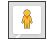Ikona Street View - funkcionalita map Googlu, která slouží k možnosti prohlédnout si vybranou oblast ve 3D zobrazení.
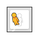Jakmile uživatel ukáže myší na ikonku, panáček se nahne a uživatel jej může uchopit a přetáhnout na mapu na požadované místo.
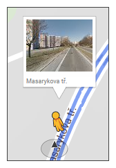
Na mapě se objeví modrou barvou čáry, které identifikují místa, kde je naskenovaná trasa.
Jakmile je panáček puštěn v místě, kde je zakreslena modrá čára, pak se na obrazovce objeví fotografie místa a je možné se po fotografii posouvat pomocí navigačních značek.
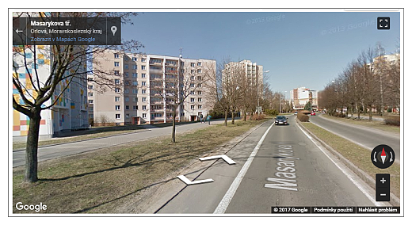
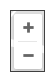
Ikonky pro přiblížení či oddálení mapy. Stejnou funkci má i kolečko myši.